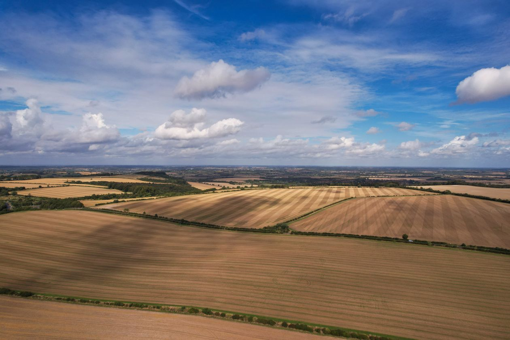

Flight log · Vol. IX · Bedfordshire, UK
The balloon goes up. The data comes down. The payload lands where it lands — so the landing is planned for, priced in, and written up either way.
I am Dr Mara Ellison, a balloon-campaign scientist. I fly stratospheric probes — instrument test flights, air-sampling series and radiosonde programmes — for research groups and instrument teams who need the stratosphere without owning a balloon programme. Every flight is forecast, tracked, recovered where possible, and closed with a written report.
House rule, non-negotiable: when the forecast and the sky disagree at the field, the sky wins. We scrub, we log why, and we fly on the next window. Nobody has ever thanked me for launching into a guess.
BASE Cardington area, Bedfordshire STATUS Booking the spring window NEXT BRIEFING CALLS Tuesdays
47
Flights logged since 2016, each closed with a written report
44 / 47
Payloads recovered. 3 lost — STR-09, STR-19, STR-41, each written up in the record
38,940 m
Highest recorded float altitude, flight STR-36
11
Instrument teams flown, four of them three seasons running
2,300 km
Longest recovery drive. One payload, one ferry, no shortcuts taken
Services register
What gets flown
Four standing services. If your payload does not fit one of them, say so in the enquiry — odd payloads are most of the job, but they are priced from the flight plan, not from this page.
| Service | Flown for | Campaign shape | Status |
|---|---|---|---|
| Instrument test flights | Instrument teams with hardware bound for aircraft, Arctic or orbital campaigns | Single-payload qualification flight, full telemetry, failure data welcomed | BOOKING — SPRING WINDOW |
| Air-sampling campaigns | Atmospheric research groups | Multi-launch series to a target altitude band, sealed canisters, chain-of-custody log | BOOKING — SPRING WINDOW |
| Radiosonde & profile programmes | Research groups and meteorological services | Recurring launches on an agreed cadence, profiles delivered in the client’s format | ONGOING — TWO PROGRAMMES |
| Heavy-payload recovery-first flights | Instrument teams, payloads to 12 kg | Flight planned backwards from the landing zone; dual beacons, cutdown authority agreed in writing | BY APPLICATION — SITE-DEPENDENT |

Instrument No. 1 — the converter
Pressure in, altitude out — working shown
A radiosonde reports pressure, not height. The first-pass conversion uses the International Standard Atmosphere: a printed table of pressure by altitude that the whole field works from. Enter a measured pressure and the converter interpolates between the two bracketing printed levels — and shows you the arithmetic, because a number you cannot check is just a rumour.
Pressure → altitude converter
TABLE 1 · ISA · LINEAR INTERPOLATIONRange: 2.9 hPa (40,000 m) to 1,013.25 hPa (sea level). Drag the slider, tap the steppers, or type a pressure.
2.9 hPa · 40 km226.3 · 11 km1,013.25 · sea level
Bracketed by the printed levels either side of your pressure.
—
| Altitude (m) | Pressure (hPa) | Altitude (m) | Pressure (hPa) |
|---|---|---|---|
| 0 | 1013.25 | 11,000 | 226.3 |
| 1,000 | 898.7 | 12,000 | 193.3 |
| 2,000 | 795.0 | 14,000 | 141.7 |
| 3,000 | 701.1 | 16,000 | 103.5 |
| 4,000 | 616.4 | 18,000 | 75.7 |
| 5,000 | 540.2 | 20,000 | 55.3 |
| 6,000 | 472.0 | 25,000 | 25.5 |
| 7,000 | 410.6 | 30,000 | 12.0 |
| 8,000 | 356.0 | 35,000 | 5.8 |
| 9,000 | 307.4 | 40,000 | 2.9 |
| 10,000 | 264.4 |
Levels above 20,000 m are printed at wider intervals — the interpolation spans them the same way, and the working line tells you the bracket you are in. Standard-atmosphere values are the field’s shared reference, reproduced here as published.
Fees, printed
The price shape, before you ask
Balloon work is priced per launch plus the honest unknowns. The unknowns are not hidden in a footnote — they are a line called recovery, and it is an allowance, because nobody can price a landing zone that the wind has not chosen yet.
Operations, per launchCrew of three, flight plan, airspace coordination, tracking and chase
£2,400per launch
Balloon, helium & consumablesFrom — the balloon size your payload and target altitude need sets this; quoted per flight plan
£1,150from, per launch
Recovery allowanceAn allowance, not a price: a £60 drive one flight, a boat and a long day the next. Unspent allowance is not billed
£450per launch, as spent
Analysis & flight reportEvery flight closed in writing: profile, telemetry, recovery account, data in your format
£1,800per campaign
Extra field daysWeather holds, scrubbed windows, second attempts — the sky sets this number, we just publish it
£650per day
Campaign estimator
RATES AS PRINTED ABOVESet the shape of your campaign. The estimator uses the printed rates exactly — a planning figure for a first conversation, not a quote. The quote comes from the flight plan.
Launches Balloon flights in the campaign
Extra field days Weather holds and second attempts, beyond the launch days
From the record — flight STR-31
The failure was the deliverable
An instrument team flew a prototype aerosol inlet ahead of their Arctic campaign. It froze at 19 km — and because the flight carried extra thermocouples at the team’s request and mine, the telemetry showed exactly where the cold bit and when. The full account is in the flight record.
“Most test flights tell you your instrument works. Mara’s told us ours didn’t — at 19 kilometres, at minute forty-one, at the exact joint we then redesigned. That is the flight our Arctic campaign is built on. She also talked us out of waiting for the ‘finished’ version, and she was right: the prototype was the one we needed to break.”
On flight STR-31, instrument test flight · payload recovered same day, 74 km downrange